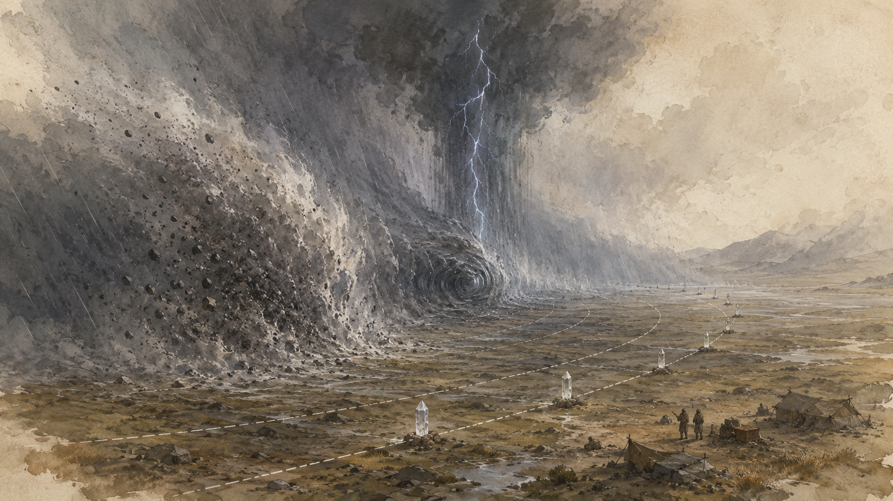
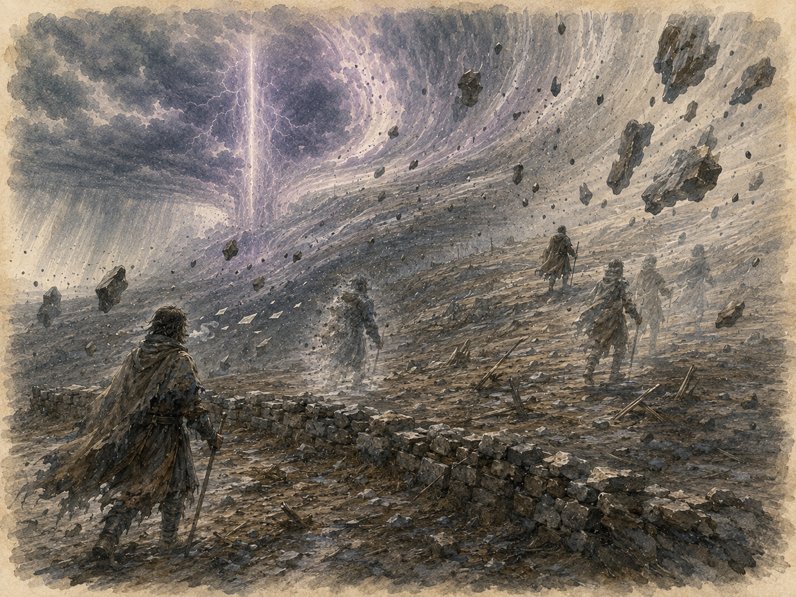
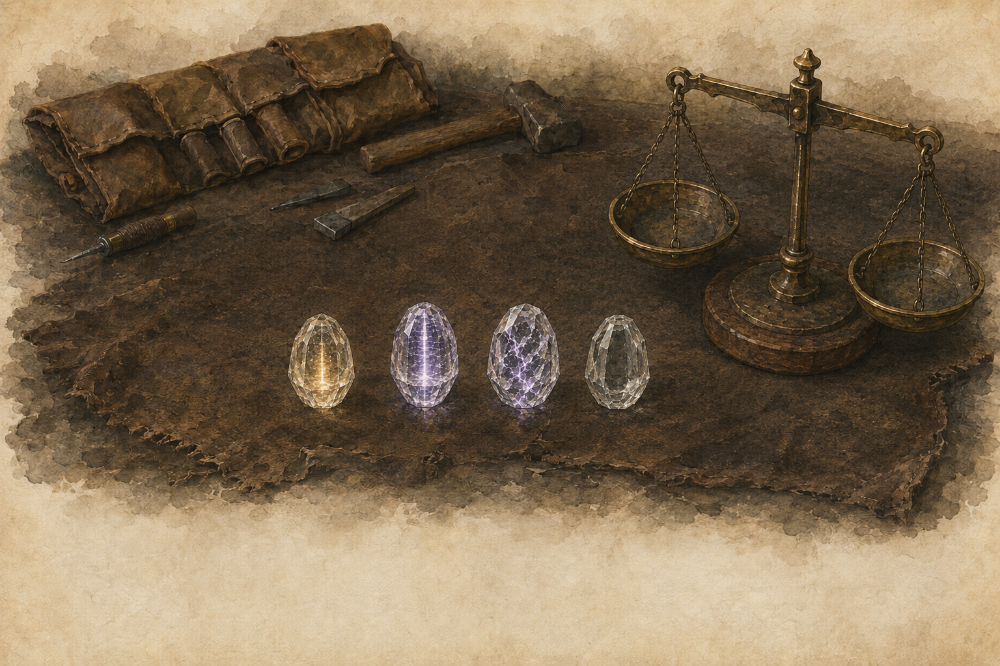
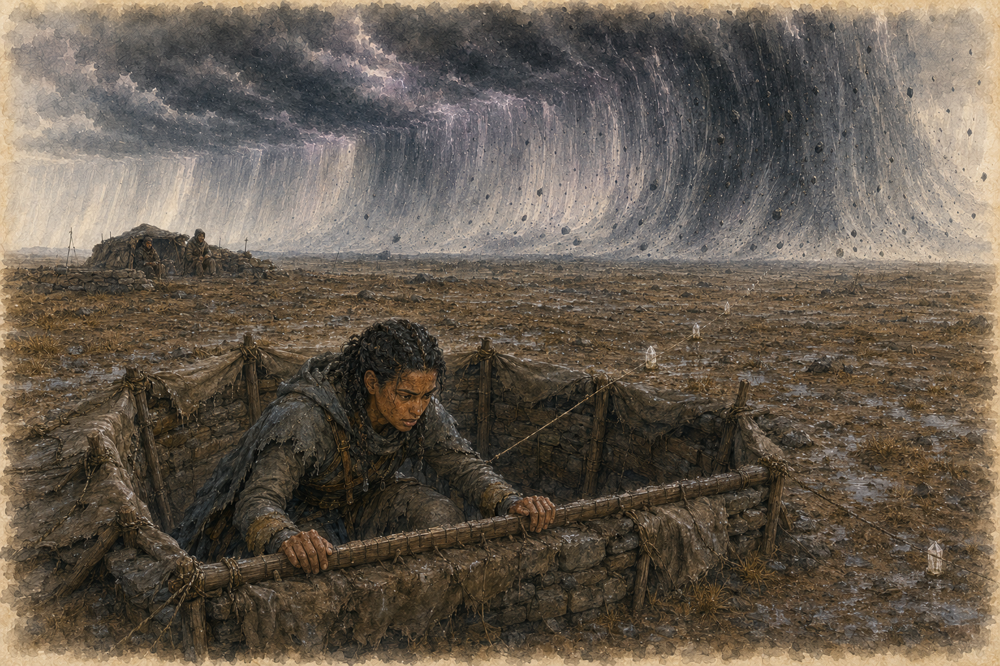
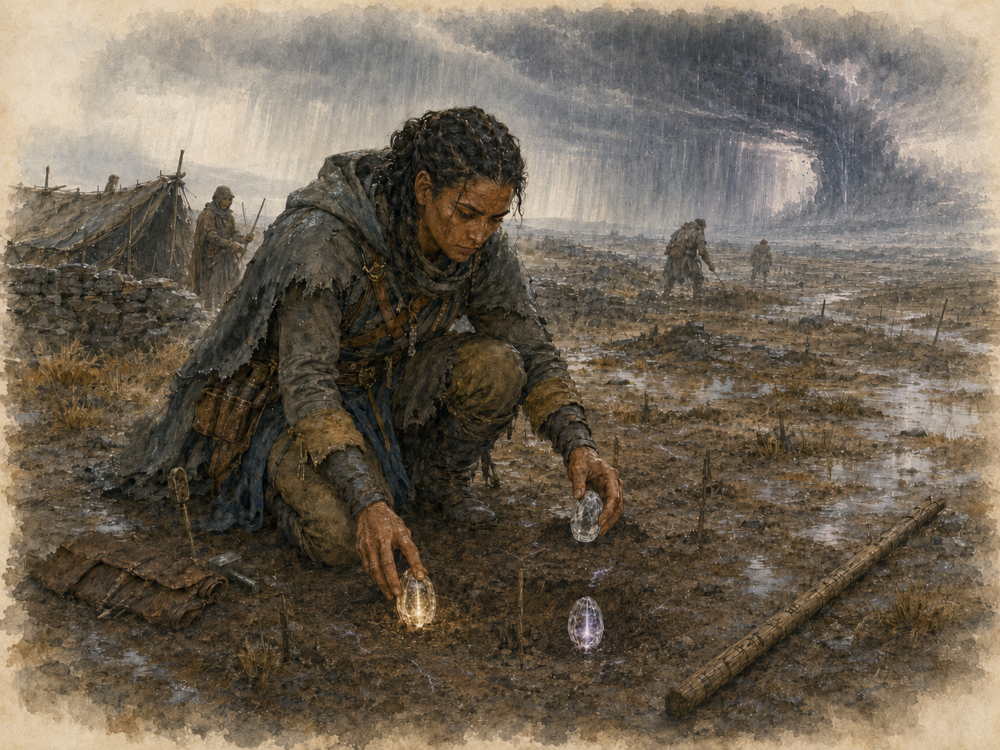
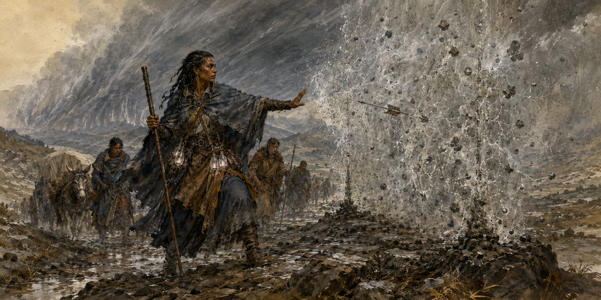
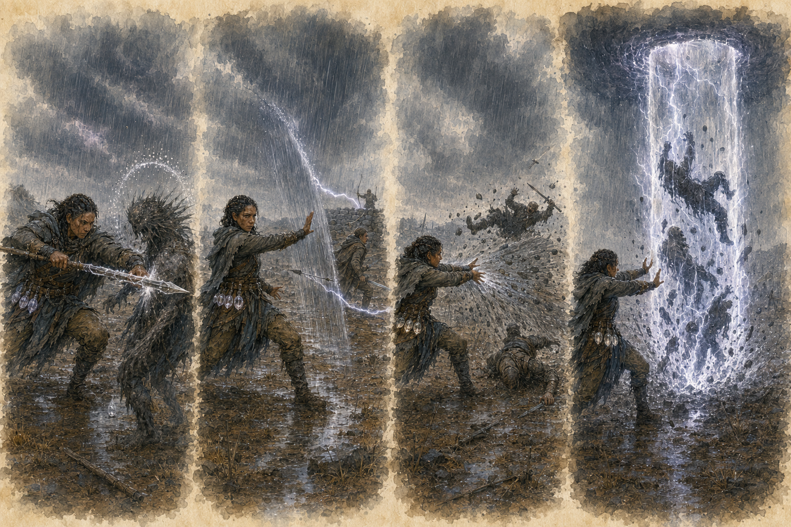
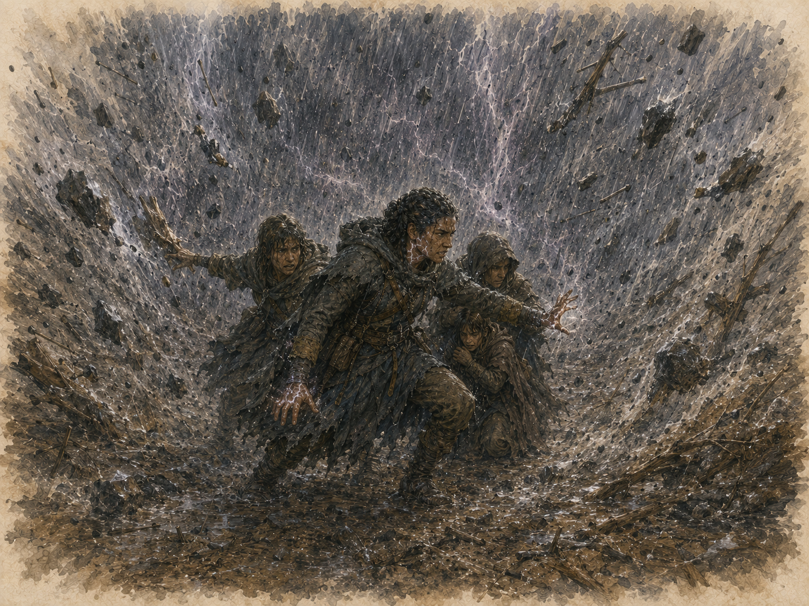
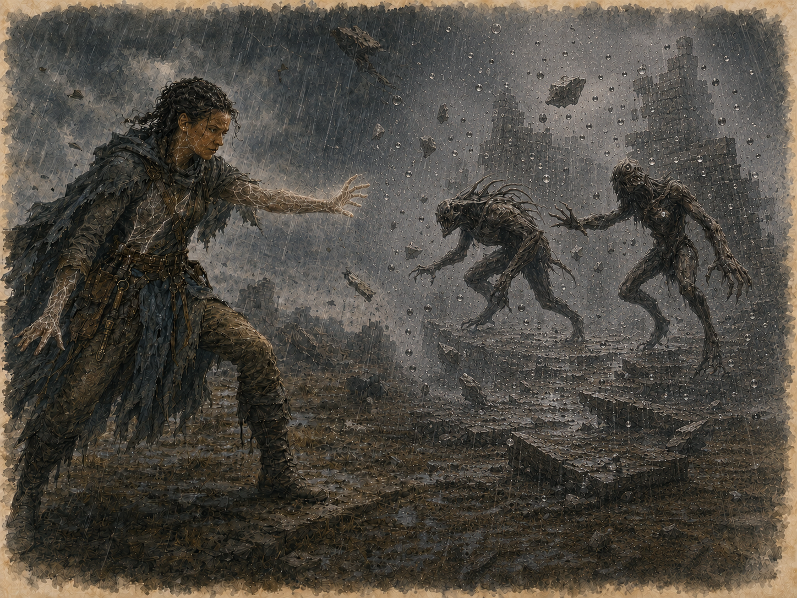

1. Что известно о Крике
Крик — мигрирующая перманентная аномалия высшего рейтинга, проходящая через Землю Безумцев вместе с огромным штормовым фронтом. Причина его возникновения достоверно не установлена. Жители континента наблюдают Крик менее десяти лет, но за это время его маршрут, последовательность зон и основные признаки были достаточно хорошо изучены.
Постоянен сам фронт, а не пройденная им местность. После прохода остаются пожары, затопленные дороги, разрушенные строения и другие последствия шторма, однако пространственные и временные искажения рассеиваются за несколько часов. Если новый обход проходит по прежней трассе, Крик возвращается туда снова.
2. Два имени
Крик — тишанийское имя. По местному преданию, в его гуле слышны отголоски криков прошлого. В Тишаниэле само название часто заменяют жестом: ладонь резко отворачивают от губ.
Свет Огня идущий — имя проповедников Агор'Кайна. Культ Жара считает шагающий Столп зримым шествием Творца.
По выбранному имени можно понять происхождение собеседника: Крик — у тех, кто помнит; Свет Огня — у тех, кто молится.
3. Строение фронта
Активная часть Крика, от прихода Вала до ухода Ока, проходит над одной местностью примерно за 11–12 минут. После Ока над землёй ещё несколько часов держится Хвост. Зоны всегда следуют в одном порядке: Вал, Око, Ранний Хвост и Поздний Хвост.
Вал
Вал образует переднюю кромку Крика: стену воздуха, воды и пепла высотой в сотни футов. Перед ней летят камни и обломки, сорванные с земли и строений. От появления тёмной полосы на горизонте до первого удара проходят считанные минуты. Одну точку Вал накрывает примерно на десять минут.
Око
Око — ядро около ста метров в поперечнике, идущее сразу за Валом. Внутри перестают действовать привычные законы времени, расстояния и причинности: существа исчезают из настоящего, оказываются по другую сторону преград и переживают повторяющиеся мгновения. Над одной точкой Око проходит за 10–15 раундов; дольше внутри пока не оставался никто.
Столп
Над Оком стоит непрерывная грозовая колонна. Молнии бьют изнутри наружу, словно небо пытается вытолкнуть ядро из мира. Столп виден за десятки миль и служит единственным надёжным маяком Крика: облака могут скрыть Вал, но не его свет.
Хвост
Ранний Хвост длится 2–4 часа. Ливень и пепельная мгла слабо заслоняют местность, размокшая земля становится труднопроходимой, по-прежнему бьют молнии и летят обломки. Резонанс распадается на резкие, непредсказуемые выбросы, поэтому наполнить кварц контролируемым зарядом здесь невозможно: Настройка в Раннем Хвосте всегда проваливается.
Поздний Хвост длится около часа. Дождь ещё слабо заслоняет местность, но опасные выбросы прекращаются, а грязь и потоки воды уже не мешают обычному движению. В это время можно безопасно выйти из укрытий, извлечь заложенные сосуды и провести Настройку.
По правилам D&D 5e слабо заслонённая местность даёт помеху проверкам Мудрости (Восприятие), основанным на зрении. Такая местность не считается укрытием и сама по себе не повышает КД.

4. Маршрут и расписание
Крик движется вместе с большой атмосферной циркуляцией континента. Над пепельным западом фронт ускоряется, в глубине материка замедляется и петляет. Некоторые долины Серых Хребтов защищены рельефом, но даже там слышен далёкий гул Столпа.
Караванщики проследили одиннадцать полных обходов и вывели из наблюдений следующие интервалы:
сухое полугодие: 43 дня;
влажное полугодие: до 61 дня;
точный прогноз Чтеца Столпа: три дня, коридор около мили;
приблизительный прогноз: семь дней, коридор шириной примерно в дневной переход.
День прохода обычно удаётся определить за неделю, но точный час и коридор трассы — только за три дня. Никто, даже Тавори, не может надёжно предсказать трассу дальше чем на семь дней.
5. Правила среды
Если персонажи попадают в Вал или Око, инициатива определяется даже при отсутствии противников. Эффекты «в начале хода» разрешаются в начале хода каждого существа, а эффекты «каждый раунд» — на значении инициативы 20, после разрешения ничьих. Вне боя один раунд равен 6 секундам.
| Зона | Длительность | Спасбросок | Провал | Успех и дополнительные эффекты |
|---|---|---|---|---|
| Вал | Около 10 минут | Телосложение СЛ 18 один раз при накрытии | 10к6 дробящего урона, отброс на 15 фт и падение ничком | Половина урона, без отброса и падения |
| Око | 10–15 раундов | Телосложение СЛ 20 в начале каждого хода | 16к6 силового урона | Половина урона; затем определяется Феномен Ока |
| Ранний Хвост | 2–4 часа | Телосложение СЛ 16 каждые 10 минут | 4к6 урона молнией или дробящего урона | Половина урона; слабо заслонённая и труднопроходимая местность |
| Поздний Хвост | Около 1 часа | — | — | Слабо заслонённая местность; безопасное окно Настройки |
На открытом месте в Валу в начале каждой минуты требуется спасбросок Ловкости СЛ 15. При провале существо получает 4к6 дробящего урона от обломков, при успехе — половину. При укрытии на три четверти или полном укрытии этот спасбросок не требуется. Первая ночь всегда проводится в заранее подготовленном укрытии не хуже укрытия на три четверти; пережить весь Вал на открытом месте обычным способом практически невозможно.
На значении инициативы 20 каждого раунда Мастер случайно определяет точку в пределах 300 фт от центра Ока. Все существа в радиусе 5 фт от неё совершают спасбросок Ловкости СЛ 15, получая 6к6 урона молнией при провале или половину при успехе. Спасброски Телосложения для поддержания концентрации, вызванные уроном или феноменом Ока, совершаются с помехой.
Перед каждым спасброском в Раннем Хвосте Мастер выбирает или случайно определяет источник выброса: молния наносит урон молнией, летящие обломки — дробящий урон. Полное укрытие одновременно от неба и обломков отменяет этот спасбросок.
Феномены Ока
В начале каждого своего хода существо внутри Ока совершает спасбросок Телосложения СЛ 20. При провале оно получает 16к6 силового урона, при успехе — половину этого урона. Затем существо бросает к8 и применяет выпавший эффект из таблицы Феноменов Ока. Бросок к8 совершается независимо от результата спасброска, даже если получаемый урон был полностью предотвращён.
| к8 | Феномен |
|---|---|
| 1 | Провал времени. Существо совершает спасбросок Мудрости СЛ 20; при провале оно теряет действие текущего хода. |
| 2 | Обнуление расстояния. Существо телепортируется на 1к6 × 10 фт в случайном направлении. Преграды между исходной и конечной точками не мешают переносу; если конечная точка занята или находится внутри твёрдого объекта, существо появляется в ближайшем свободном пространстве. |
| 3 | Немота. До конца следующего хода этого существа оно не может говорить и использовать вербальные компоненты. |
| 4 | Исчезновение. Существо удаляется из пространства и становится недееспособным до начала своего следующего хода. Пока оно отсутствует, его нельзя выбрать целью и на него не воздействуют области. В начале следующего хода существо сначала возвращается в прежнее или ближайшее свободное пространство, а затем, если находится внутри Ока, разрешает обычные эффекты начала хода. |
| 5 | Куски времени. Начиная со следующего раунда результат инициативы существа уменьшается на 1к10 до окончания текущего столкновения, минимум до 1. Повторное выпадение не меняет штраф. |
| 6 | Слепота. Существо ослеплено до конца своего следующего хода. |
| 7 | Срыв. Концентрация автоматически прекращается. |
| 8 | Двойной удар. Существо немедленно повторяет спасбросок Телосложения против урона Ока, получая полный урон текущего прохода при провале или половину при успехе. |

6. Существа Крика и пределы управляемости
Существа аномального происхождения вырываются из разрыва вместе с Валом и движутся с Оком. Отставшие в Хвосте твари заметно слабеют: их скорость снижается на 10 фт, а броски атаки совершаются с помехой. Они гибнут в течение нескольких часов, поэтому постоянного заражения местности после прохода не остаётся. Точную опасность отдельных существ определяет Мастер.
Направление Единой Силы одним человеком не приманивает и не отводит Крик. Его нельзя схлопнуть, но отдельное проявление можно локально ослабить или ненадолго стабилизировать. Известных Держащим способов изменить трассу фронта не существует.
7. Происхождение и доктрина
Орден связывает своё начало с Тавори. Согласно принятому в Ордене преданию, её община слишком поздно свернула лагерь: Вал накрыл людей на открытой равнине, а над самой Тавори прошло Око. Тавори вышла из него живой с кварцевым голышом в руке. Камень светился и грел ладонь восемь дней. После этого она сохранила постоянное чувство направления и примерного расстояния до Ока. Для народа, торгующего маршрутами, человек, который всегда знает положение главной угрозы, стал живой точкой отсчёта. Вокруг Тавори сложился молодой Орден Держащих Равновесие.
Доктрина Ордена проста: взяв силу из Хвоста, Держащий обязан помочь людям пережить следующий проход. Предупреждение о приближении Крика всегда передают бесплатно. Брать плату разрешено только за точность расчёта: час прихода, силу ближайшего прохода, границы безопасного окна и положение оси Ока.
Утаивший общее предупреждение ради выгоды называется продавшим горизонт. Орден отказывает ему в доверии, обучении и доступе к реестрам. Член Ордена приносит эту клятву при посвящении. Независимый Держащий её не приносит, но человек, сознательно скрывший угрозу, всё равно лишается доступа к наставникам, реестрам и рынку Ордена.
8. Кварц и заряд
Сосуд — любой кусок чистого кварца, в котором Крик может оставить заряд. Обычно сосуд гранят до соприкосновения с Криком, чтобы продлить срок удержания. Заряд — единица аномальной энергии, которую сосуд удерживает после прохода. Пустой неповреждённый сосуд можно использовать повторно. Прошитый — любой человек, получивший хотя бы I ранг этой Иерархии; слово описывает изменённое Криком тело, а не членство в Ордене.
Обычные обученные люди могут добывать и гранить кварц, закладывать пустые сосуды перед проходом, извлекать их после прохода, перевозить и продавать заряженные камни. Только прошитый способен точно распознавать заряд, активировать его, уплотнять при Настройке и расходовать на способности.
| Тип | Происхождение | Ёмкость | Отличительные признаки |
|---|---|---|---|
| Полный камень | Пустой сосуд, оставленный в Валу или на краю Ока вне центральной линии, после прохода автоматически получает 1 заряд; успешная прямая Настройка также создаёт полный камень | 1 заряд | Ровное свечение и слабое постоянное тепло |
| Осевой камень | Закладка на центральной линии Ока | 2 заряда | Глубокое пульсирующее свечение; рядом с аномалией оно становится ярче и пульсирует чаще |
| Уплотнённый камень | Создан Держащим при Настройке | 2 заряда | Рваный внутренний ритм, который прошитый узнаёт на ощупь |
Осевой и уплотнённый камни не повышают урон, СЛ или Проводимость: каждый из них лишь хранит два заряда. Если такой сосуд разрушен, теряются оба заряда.
Обычная закладка
Пустой сосуд, помещённый до прихода Крика в обычную полосу Вала или на край рассчитанной линии Ока и оставшийся там до Позднего Хвоста, без проверки становится полным камнем с 1 зарядом, если не был разрушен. Разместить один сосуд действием может любое существо, понимающее расчётную схему каравана. Такая закладка не считается Настройкой, не ограничена Проводимостью и не может создать осевой или уплотнённый камень.
Активация и распознавание заряда
В руке непрошитого заряженный кварц только светится и греет. Прикасаясь к сосуду, прошитый без проверки определяет число зарядов, оставшийся срок удержания и наличие трещин, способных выпустить энергию. Повреждение сосуда остаётся сюжетным свойством, пока Мастер прямо не назначит предмету КД и хиты.
Заряд не привязан к создавшему его Держащему. Заряженный камень можно передать другому прошитому, и тот сможет использовать его сразу. Держать сосуд в руке не требуется: достаточно нести его при себе. Камень в закрытом сундуке, оставленном в лагере, или находящийся у другого существа недоступен для расходования и не поддерживает пассивный резонанс.
Расход заряда
Когда Держащий тратит заряд, он выбирает доступный сосуд или внутренний запас. Число зарядов в выбранном источнике уменьшается на 1, и оставшаяся Проводимость Держащего до следующего отдыха также уменьшается на 1. При нулевой оставшейся Проводимости тратить заряды нельзя, даже если в камнях ещё есть энергия. Опустевший неповреждённый сосуд не разрушается и может быть наполнен снова.
Если способность требует несколько зарядов, они могут быть взяты из одного или нескольких доступных сосудов и внутреннего запаса. Все требуемые заряды тратятся одновременно. Если доступных зарядов или оставшейся Проводимости недостаточно, способность нельзя активировать.
Пассивный резонанс

9. Огранка и торговля
Сырой необработанный кварц удерживает заряд 8–10 дней. Чтобы продлить срок, камень гранят до зарядки: первый же срез заряженного сосуда нарушает внутренний рисунок и выпускает всю оставшуюся силу.
| Огранка | Срок | Сырьё и изготовление |
|---|---|---|
| Дорожная | 2 недели | Чистый кварц, любой камнерез Гашена |
| Караванная | 1 месяц | Кварц без видимых жил, гашенские мастерские |
| Торговая | 6 месяцев | Отборный кварц, около трети уходит в брак |
| Зимняя | 1 год | Безупречный кристалл, считанные мастера |
| Вечная | Около 200 лет | Только Тишаниэль; на рынке считается вечной |
По истечении срока все оставшиеся заряды безвредно рассеиваются, а кварц становится пустым неповреждённым сосудом, который можно наполнить снова. Указанный срок отсчитывается с момента наполнения, а не изготовления.
Слушающие создают лишь единичные вечные камни. Большинство известных экземпляров учитывается Орденом, но их точное число и местонахождение не разглашаются. Цена камня зависит от типа огранки, числа зарядов и оставшегося срока. Полевые камни быстро дешевеют, торговые служат монетой, зимние — залогом, а вечные считаются сокровищами исключительной ценности. Число переносимых камней ограничивают только вес, объём и обычные правила нагрузки.
10. Орден и независимые Держащие
У Ордена нет цитадели. Пять караванов движутся по дуге и перехватывают фронт каждые 12–18 дней, обеспечивая основной объём заряженного кварца. Независимые Держащие добывают камни сами или покупают их через Гашен.
| Статус | Значение |
|---|---|
| Работник промысла | Работает с кварцем, но не способен активировать заряд |
| Прошитый | Имеет хотя бы I ранг Иерархии |
| Член Ордена | Принял доктрину и внутреннюю дисциплину |
| Караванщик | Участвует в перехватах Крика и массовом сборе |
| Независимый Держащий | Имеет Иерархию, но выбирает собственный путь |
Посвящение называется Первой ночью. Кандидат переживает Вал в заранее рассчитанной точке и подготовленном укрытии, где наставники могут наблюдать за возникновением прошивки. После этого он может остаться в Ордене, уйти с наставником или действовать самостоятельно.
Держащие низших рангов встречаются сравнительно часто, тогда как каждый следующий высокий ранг значительно реже предыдущего. Держащие высших рангов считаются исключительными. Титул обозначает глубину прошивки и доступ к резонансу, а не профессию, должность или власть в Ордене.

11. Таблица рангов
Иерархия дополняет класс и уровень персонажа D&D 5e. Ранги получают по итогам соответствующих испытаний и отдельно от повышения классового уровня. Иерархия существенно превосходит по силе обычные черты персонажа. Все числовые значения в таблице являются итоговыми для данного ранга, а не складываются со значениями предыдущих строк: строка нового ранга заменяет прежние числовые значения. Ранее полученные способности и сопротивления при этом сохраняются.
| Ранг | Титул | Хар-ки | КД | Скорость | Инициатива | Устойчивость | Проводимость | Ширина | Куб |
|---|---|---|---|---|---|---|---|---|---|
| I | Смотрящий на Горизонт | — | 0 | — | Лов или Мдр; +1/+2 | — | 1 | — | — |
| II | Считающий Проходы | +1; всего +1 | +1 | — | +2/+4 | +1 | 2 | 1 | к4 |
| III | Ходок Хвоста | +1; всего +2 | +1 | +5 фт | +3/+5 | +1 | 4 | 1 | к4 |
| IV | Носящий Заряд | +2; всего +4; предел 22 | +2 | +5 фт | +4/+7 | +2 | 7 | 2 | к6 |
| V | Идущий Перед Валом | +1; всего +5; предел 22 | +3 | +10 фт | +5/+8 | +2 | 10 | 2 | к6 |
| VI | Чтец Столпа | +2; всего +7; предел 24 | +3 | +10 фт | +6/+10 | +3 | 14 | 3 | к8 |
| VII | Держатель Равновесия | +1; всего +8; предел 24 | +4 | +10 фт | +7/+12 | +3 | 19 | 3 | к8 |
| VIII | Стоявшая под Оком | +2; всего +10; предел 26 | +5 | +15 фт | +8/+15 | +4 | 24 | 4 | к10 |
Сопротивления по рангам
Каждая строка добавляет новый вид сопротивления к уже полученным.
| Ранг | Новое сопротивление | Все доступные сопротивления |
|---|---|---|
| I | — | — |
| II | Звуковой урон | Звуковой |
| III | Урон молнией | Звуковой, молния |
| IV | Урон холодом | Звуковой, молния, холод |
| V | Урон огнём | Звуковой, молния, холод, огонь |
| VI | Психический урон | Звуковой, молния, холод, огонь, психический |
| VII | Силовой урон | Звуковой, молния, холод, огонь, психический, силовой |
| VIII | Дробящий урон | Звуковой, молния, холод, огонь, психический, силовой, дробящий |
На I ранге Проводимость равна 1: тело уже способно безопасно провести через себя один внешний заряд между отдыхами, в том числе для классовой способности, описание которой прямо разрешает расходовать заряды Крика. Без такого указания заряд Крика нельзя использовать вместо ячейки заклинания, кости превосходства, пункта чародейства или другого классового ресурса. Хранить заряд внутри тела до VIII ранга нельзя, а собственные активные способы расхода Иерархии открываются на II ранге.
12. Общие бонусы
Характеристики
На II, III, IV, V, VI, VII и VIII рангах персонаж получает соответственно +1 / +1 / +2 / +1 / +2 / +1 / +2 пункта характеристик, всего +10. При получении ранга игрок распределяет новые пункты между любыми характеристиками; выбор фиксируется. Максимально допустимое значение любой характеристики повышается до 22 на IV ранге, до 24 на VI и до 26 на VIII. Одна характеристика может получить от этой Иерархии не больше +6.
Класс доспеха и скорость
Бонус КД складывается с доспехом и щитом. Постоянные бонусы КД от разных Иерархий не складываются: используется наибольший. После применения постоянных бонусов Иерархий КД не может превышать 25. Временные бонусы от укрытия и кратковременных способностей прибавляются уже после проверки этого предела. В столбце «Скорость» указан бонус к базовой скорости персонажа, а не её итоговое значение.
Постоянные бонусы скорости, инициативы и Устойчивости от разных Иерархий также не складываются: для каждого показателя используется наибольший. Повышения характеристик складываются, но итоговая характеристика не может превышать наибольший доступный персонажу предел. Сопротивления одному виду урона не складываются. Разные по природе эффекты применяются совместно по обычным правилам D&D 5e.
Устойчивость и сопротивления
Бонус Устойчивости добавляется к спасброску против среды или феномена, непосредственно созданного аномалией: например, против Вала, Ока, Хвоста, временной петли или эффекта с прямой пометкой аномальный эффект. Он не действует против обычной атаки, яда, болезни, заклинания или классовой способности только потому, что источник имеет аномальное происхождение. Устойчивость складывается с владением спасброском.
Сопротивления из таблицы накопительны и действуют при наличии хотя бы одного настроенного заряда. На VIII ранге персонаж имеет сопротивление звуковому, дробящему, психическому и силовому урону, а также урону молнией, холодом и огнём. Звуковой урон в этом документе является стандартным уроном звуком (thunder damage) D&D 5e, а не отдельным кампанийным видом. Сопротивление дробящему урону действует независимо от того, является источник магическим или немагическим.
13. Предчувствие: Слушать Ветер
На I ранге Держащий получает Талант Предчувствия, не требующий заряда. Предчувствие — особая компетенция Иерархии, основанная на Мудрости. Держащий считается владеющим ею и добавляет бонус мастерства к проверкам Мудрости (Предчувствие). Она не является характеристикой и не заменяет проверки или спасброски Мудрости.
При броске инициативы Держащий выбирает модификатор Ловкости или Мудрости. Этот выбор делается при каждом новом броске инициативы и не требует действия.
Один раз за долгий отдых Держащий может потратить 10 минут на активное Предчувствие. Перед проверкой игрок называет одну предполагаемую угрозу или объявляет, что прислушивается к ближайшей значимой угрозе, и задаёт не больше указанного в таблице числа вопросов. Вопросы могут касаться времени, направления, источника, природы угрозы или безопасного способа избежать первого столкновения. Затем совершается одна проверка Мудрость (Предчувствие) СЛ 13; её результат определяет точность всех ответов. Мастер может совершить проверку скрытно.
| Результат | Ответ Мастера |
|---|---|
| Ниже СЛ | Общее предчувствие без ложной информации |
| Успех | Правдивый образ угрозы и обычный бонус инициативы |
| Успех на 5+ | Точный образ и усиленный бонус инициативы |
| Натуральная 20 | Считается успехом на 5+ |
| Натуральная 1 | Бонуса нет, но ложной информации также нет |
Мастер описывает ответы языком погоды: штиль означает отсутствие значимой угрозы, ветер меняется — неопределённую или удалённую опасность, приближается буря — вероятное столкновение, а Столп близко — непосредственную и тяжёлую угрозу. Вместе с образом Мастер сообщает достаточно обычных деталей, чтобы игрок понял, на какой вопрос получен ответ; метафора не должна скрывать полезную информацию.
| Ранг | Горизонт | Вопросы | Инициатива: успех / успех на 5+ |
|---|---|---|---|
| I | До 24 часов, но не дольше чем до окончания следующего долгого отдыха | 1 | +1 / +2 |
| II | До 24 часов, но не дольше чем до окончания следующего долгого отдыха | 1 | +2 / +4 |
| III | До 24 часов, но не дольше чем до окончания следующего долгого отдыха | 1 | +3 / +5 |
| IV | 24 часа | 2 | +4 / +7 |
| V | 24 часа | 2 | +5 / +8 |
| VI | 3 дня | 3 | +6 / +10 |
| VII | 3 дня | 3 | +7 / +12 |
| VIII | 7 дней | 4 | +8 / +15 |
Горизонт — временной промежуток, в котором предсказание может сбыться. Угроза считается предчувствованной, если успешное Предчувствие указало хотя бы на её время, направление, источник, природу или безопасный способ избежать первого столкновения, а событие произошло в пределах горизонта. Бонус применяется только к броску инициативы при столкновении с этой угрозой, но не к другим боям в тот же период. Ранговый бонус II–VIII требует хотя бы одного настроенного заряда; без него используется строка I.
Эхо Предчувствия
Эхо Предчувствия открывается со II ранга. Его эффекты накопительны, действуют только против предчувствованной угрозы и не требуют заряда. Даже при отсутствии кварца Держащий сохраняет все эффекты Эха своего ранга.
| Ранг | Новый эффект |
|---|---|
| II | Первые 10 фт перемещения на первом ходу не провоцируют атак при возможности. |
| III | Пока ты находишься в сознании, эта угроза не может застать тебя врасплох. |
| IV | Всё перемещение на первом ходу не провоцирует атак. |
| V | Первый спасбросок до начала второго хода совершается с преимуществом. |
| VI | В начале каждого из первых двух ходов запас реакций становится равным двум. |
| VII | Эффект двух реакций длится первые три хода; первая атака по тебе до начала второго хода совершается с помехой. |
| VIII | Эффект двух реакций длится первые четыре хода; к20 инициативы ниже 10 считается 10. |
Две реакции нельзя использовать на один триггер. Неиспользованные реакции не переносятся. Эхо действует автоматически, не требует действия, бонусного действия или реакции и не предоставляет дополнительного бонусного действия. Его проявление — мгновенные образы дождя и молний, на долю секунды показывающие Держащему предстоящее движение источника угрозы.
14. Проводимость и расход заряда
Проводимость — максимальное число зарядов, которое тело безопасно пропускает между отдыхами. В начале периода после отдыха оставшаяся Проводимость равна значению в таблице рангов. Каждый потраченный заряд уменьшает её на 1. Короткий или долгий отдых полностью восстанавливает Проводимость и все использования способностей с отметкой 1/короткий отдых. Долгий отдых также восстанавливает способности с отметкой 1/долгий отдых. Ни один отдых не возвращает израсходованные заряды.
Предел разряда
Ширина канала, или просто Ширина, показывает, сколько зарядов тело способно одновременно направить в универсальные усиления. В течение своего хода Держащий может потратить на Импульс Предчувствия, Резонансный урон, усиление плетений и Перегрузку суммарно не больше зарядов, чем позволяет Ширина. Этот общий лимит называется Пределом разряда.
Между окончанием одного своего хода и началом следующего все расходы на универсальные усиления, включая не требующий реакции Импульс Предчувствия, учитываются в отдельном Пределе разряда, равном Ширине. Базовая стоимость именной способности-реакции в него не входит. До первого хода персонажа в бою весь этот предел считается доступным. Вне инициативы один шестисекундный промежуток считается ходом Держащего; до начала следующего промежутка универсальными усилениями нельзя потратить больше зарядов, чем позволяет Ширина.
Базовая стоимость именной ранговой способности не входит в Предел разряда. Если эта стоимость превышает Ширину, в тот же ход нельзя применять универсальные усиления. Если стоимость не превышает Ширину, универсальные усиления разрешены в обычных пределах, если описание способности не говорит обратного.
Импульс Предчувствия
После собственного броска атаки, проверки характеристики или спасброска, но до объявления результата, Держащий может потратить 1 заряд и добавить один куб резонанса. Импульс применяется не чаще одного раза за ход, входит в Предел разряда и не применяется к инициативе или броскам других существ.
Резонансный урон
После попадания собственной атакой Держащий может потратить заряды в пределах оставшегося Предела разряда. Каждый заряд добавляет один куб резонанса урона молнией или звукового урона; с VI ранга можно вместо этого выбрать силовой урон. Тип выбирается отдельно для каждого применения. При критическом попадании дополнительные кубы удваиваются вместе с остальными кубами урона атаки.
Усиление плетений
Для этого раздела плетением считается заклинание или прямо обозначенный Мастером эффект направления Единой Силы, который требует броска атаки, наносит урон или требует спасброска. Обычные атаки оружием и способности Иерархий плетениями не считаются.
Попадание плетением, требующим броска атаки, усиливается по правилам Резонансного урона и не может быть отдельно усилено как урон плетения.
Правила усиления одной цели применяются только к плетению, которое наносит урон без броска атаки. При таком усилении 1 заряд добавляет один куб резонанса. Усиление объявляется до броска урона. Если цель успешно совершает спасбросок и исходный эффект наносит половину урона, дополнительный урон также уменьшается вдвое. Если исходный эффект при успехе не наносит урона, дополнительный урон равен нулю.
Если плетение без области и бросков атаки выбирает несколько отдельных целей, каждая цель усиливается отдельно по правилам одной цели. За каждую усиленную цель заряды тратятся отдельно, а их общий расход входит в Предел разряда.
Массовое усиление области стоит 2 заряда за каждый добавляемый куб резонанса. Оно объявляется до броска урона и добавляет куб к единому броску урона, применяемому ко всем целям области.
Повышение СЛ на 1 стоит 2 заряда, объявляется до первого спасброска и не может превышать +2. Оно действует только на одно применение плетения.
Добавленный урон имеет любой тип, доступный Резонансному урону Держащего.
Перегрузка ранговых способностей
Если именная способность допускает Перегрузку, при её активации можно потратить дополнительные заряды в пределах Предела разряда. Каждый дополнительный заряд даёт один куб резонанса к урону или увеличивает указанный в способности размер либо дальность отбрасывания на 5 фт. Повышение СЛ на 1 стоит 2 заряда и не может превышать +2.
Для Малого Вала увеличение размера повышает длину конуса; для Стены перед Валом — длину стены; для Столпа — радиус цилиндра. Высота и остальные размеры не меняются.
Универсальное проявление резонанса — бело-синие разряды и дрожащий ореол дождя вокруг усиленного оружия, плетения или цели. Чем больше зарядов проходит за один ход, тем громче становится низкий гул и тем сильнее он напоминает далёкий гром.
15. Настройка Хвоста
Проходом считается одна полная последовательность Вала, Ока, Раннего и Позднего Хвоста, принадлежащая одному обходу Крика. Для одного Держащего все участки этой последовательности считаются одним проходом независимо от смены местности; перемещение в другую область того же фронта не даёт дополнительную Настройку, Закладку или Стояние. Начиная со II ранга, один раз за проход в Позднем Хвосте Держащий может провести Настройку. Процедура длится 10 минут плюс 1 минуту за выбранную попытку и позволяет совершить число попыток, равное удвоенному значению Проводимости из таблицы, независимо от уже потраченной Проводимости.
В начале Настройки Держащий выбирает находящиеся при нём пустые гранёные сосуды, доступную осевую закладку и, на VIII ранге, число попыток наполнить внутренний запас. Каждая попытка обычно требует отдельного сосуда. Держащий должен провести всю процедуру в Позднем Хвосте и оставаться в пределах 5 фт от всех обычных сосудов и осевой закладки. Настраивать можно собственные или чужие пустые сосуды с согласия их владельца.
По завершении процедуры для каждой попытки отдельно совершается проверка Мудрости (Предчувствие или Выживание) СЛ 13. Успех наполняет обычный сосуд одним зарядом и создаёт полный камень. При провале сосуд остаётся пустым. Если на к20 выпадает натуральная 1, проверка автоматически проваливается независимо от итогового результата, а обычный внешний сосуд разрушается. Проверки внутреннего запаса и осевой закладки изменяются соответствующими ранговыми способностями.
Если процедура прервана или Поздний Хвост закончился раньше времени, проверки не совершаются и право на Настройку за этот проход не расходуется. Пока Поздний Хвост продолжается, Держащий может начать процедуру заново с полным пределом попыток. Право на Настройку расходует только завершённая процедура.
Настройка невозможна в Раннем Хвосте. Один сосуд, заранее оставленный Закладкой под ось, входит в общий предел попыток, при успехе всегда становится осевым, не может стать уплотнённым и не расходует предел Уплотнения. За один проход Держащий может создать не больше уплотнённых камней, чем его модификатор Мудрости, но как минимум один. Предел Настройки относится к попыткам и сосудам, а не к итоговому числу полученных зарядов.

16. Способности рангов
СЛ спасброска против способности Крика равна 8 + бонус мастерства + модификатор Мудрости, если описание не устанавливает другую СЛ. Способности являются аномальными эффектами, но не заклинаниями и не требуют компонентов. Держащий должен видеть выбираемое существо, цель или точку, если не сказано обратное. Расход дополнительных зарядов не отменяет ограничение по частоте применения.
I · Смотрящий на Горизонт
Чтение Столпа · пассив. Наблюдая Столп или доступные признаки его движения не менее 1 минуты, определяешь время прихода ближайшего Вала к своему текущему местоположению с точностью до половины дня и направление, в котором относительно этого места пройдёт ось Ока. За облаками, рельефом или горизонтом можно читать след Столпа по давлению и ритму ветра, но не при полном отсутствии сведений о погоде.
Час Хвоста · пассив. Находясь внутри Хвоста, без проверки различаешь его Раннюю и Позднюю стадии и за 10 минут до перехода чувствуешь приближение безопасного окна. Способность не сообщает точную продолжительность Хвоста до того, как персонаж окажется внутри него.
II · Считающий Проходы
Настройка Хвоста · 1/проход. Действует по правилам раздела 15.
Искра Хвоста · 1 заряд · бонусное действие · 1/ход. До конца текущего хода первое попадание атакой оружием наносит дополнительно 2к6 урона молнией. Поражённая цель не может совершать реакции до конца своего следующего хода. Если до конца хода Держащий не попал атакой оружием, эффект прекращается без результата, а заряд остаётся потраченным.
Проявление: по граням оружия ползёт белая молния, а после удара вокруг цели на миг повисает беззвучный дождь.
Твёрдый шаг · 1 заряд · бонусное действие. На 10 минут получаешь преимущество на спасброски против среды и феноменов аномалий. Способность не даёт преимущества против атак или способностей существ только из-за их аномального происхождения.
Проявление: кварц тяжелеет, а следы персонажа на мгновение проступают на земле светящимися кругами.
III · Ходок Хвоста
Шкура Хвоста · пассив. Ранний Хвост не снижает твою скорость, и ты игнорируешь его труднопроходимую местность. Способность не отменяет слабое заслонение, урон или спасброски среды. Капли и пепел огибают тело узкими спиралями, обозначая безопасный шаг.
Полог дождя · 1 заряд · реакция. Когда видимое тобой существо совершает бросок атаки по тебе или согласному союзнику в пределах 5 фт от тебя, но до определения попадания, можешь дать этой атаке помеху. При промахе защищённая цель может немедленно переместиться на 10 фт в выбранном ею направлении, не провоцируя атак при возможности. Если атакующий находится в пределах 60 фт от тебя, он также получает 1к8 урона молнией.
Проявление: косая завеса дождя изгибается навстречу удару и отвечает тонкой обратной молнией.
IV · Носящий Заряд
Уплотнение · пассив. Когда результат проверки Настройки обычного внешнего сосуда превышает СЛ на 5 или больше, можешь создать уплотнённый камень с 2 зарядами вместо полного камня с 1 зарядом. За проход нельзя превысить предел Уплотнения из раздела 15. Способность не применяется к осевой закладке или внутреннему запасу.
Малый Вал · 2 заряда · действие · 1/короткий отдых. Из твоего пространства вырывается конус длиной 15 фт. Каждое существо в области совершает спасбросок Силы. При провале оно получает 3к8 дробящего урона, отбрасывается на 20 фт по прямой от тебя и падает ничком. При успехе оно получает половину урона, отбрасывается на 5 фт и не падает. Существо Огромного или большего размера совершает спасбросок с преимуществом. Способность можно Перегрузить: размер увеличивает длину конуса, а отбрасывание — обе дистанции отбрасывания.
Проявление: из кварца вырывается низкая стена пепла, воды и щебня, на миг повторяя переднюю кромку Крика.
Держать тело · 1 заряд · бонусное действие · 1/короткий отдых. Получаешь временные хиты в количестве, равном суммарному уровню персонажа плюс модификатор Мудрости, минимум 1. Эти временные хиты исчезают после следующего короткого или долгого отдыха. Пока остаётся хотя бы один временный хит, полученный этой способностью, тебя нельзя переместить против воли.
Проявление: под кожей вспыхивает сеть кварцевых линий, а воздух вокруг тела становится неподвижным.
V · Идущий Перед Валом
Ведущий увода · пассив. В начале путешествия выбери себя и до 19 согласных существ в пределах 30 фт, способных видеть или слышать тебя. Пока группа путешествует вместе и может следовать твоим указаниям, первые 12 часов движения за сутки не вызывают истощения от форсированного марша, а природная труднопроходимая местность не уменьшает походную скорость группы. После 12 часов применяются обычные правила форсированного марша, но для их расчёта 12 часов считаются безопасным пределом вместо 8 часов. Способность не отменяет истощение от голода, жажды, экстремальной температуры или магических эффектов.
Закладка под ось · 1/проход. Не позднее чем за 10 минут до прихода Вала потрать действие, чтобы поместить пустой гранёный сосуд в пределах 5 фт от себя на рассчитанную центральную линию Ока. Если сосуд остаётся на месте до Позднего Хвоста и включён в Настройку, успешная проверка превращает его в осевой камень с 2 зарядами. При провале сосуд остаётся пустым; натуральная 1 разрушает его по обычным правилам Настройки. За один проход каждый Держащий может подготовить только одну осевую закладку.
Стена перед Валом · 2 заряда · действие · концентрация до 1 минуты · 1/короткий отдых. В пределах 60 фт создаёшь на твёрдой поверхности неподвижную стену толщиной 1 фут, длиной до 30 фт и высотой 10 фт. Она состоит из последовательных отрезков длиной по 5 фт и не может возникнуть в пространстве существа. Дальнобойная атака оружием, линия которой пересекает стену, автоматически промахивается. Добровольное пересечение стены стоит 15 фт движения. Принудительное перемещение может провести существо через стену без этой стоимости. Впервые за ход пересекая стену любым способом, существо получает 2к6 дробящего урона. При создании выбери несколько существ, но не больше модификатора Мудрости; даже при модификаторе 0 или ниже можно выбрать одно существо. Выбранные существа не получают урон от стены, но при добровольном пересечении всё равно тратят движение. Перегрузка размера увеличивает только длину стены.
Проявление: между двумя точками встаёт плотный вертикальный поток дождя и вращающегося камня.

VI · Чтец Столпа
Дальний счёт · пассив. После 1 часа работы с наблюдениями и картой точно определяешь трассу Крика на ближайшие три дня с коридором погрешности около 1 мили и приблизительно — на семь дней с коридором шириной в один дневной переход. Для расчёта нужны сведения о текущем положении Столпа, но членство в Ордене или доступ к его реестрам не требуются.
Чтение силы · пассив. После 10 минут наблюдения за Столпом определяешь, будет ближайший проход обычным, усиленным или критическим. Эти названия описывают относительную опасность и сами по себе не меняют правила. Мастер отдельно сообщает, какие источники и виды урона будут возможны в Раннем Хвосте, как изменятся СЛ и число кубов урона среды по сравнению с таблицей раздела 5 и сместилась ли ось после последнего расчёта. Если числовых изменений нет, Мастер сообщает это прямо.
Столп · 3 заряда · действие · 1/короткий отдых. Выбери точку на видимой поверхности в пределах 120 фт. От неё возникает вертикальный цилиндр радиусом 10 фт и высотой 40 фт. Каждое существо в цилиндре совершает спасбросок Ловкости, получая 8к8 урона молнией при провале или половину при успехе. До конца твоего следующего хода каждое существо, находившееся в цилиндре при его возникновении, независимо от результата спасброска, не может совершать действие Спрятаться, а его невидимость подавляется: оно становится видимым, но сама способность или эффект невидимости не прекращается. Перегрузка размера увеличивает только радиус цилиндра.
Проявление: вверх и вниз одновременно раскрывается бело-синий столб молний, внутри которого силуэты становятся чёрными и резкими.

VII · Держатель Равновесия
Книга проходов · пассив. Потратив 10 минут на изучение карты, реестра или партии кварца, без проверки определяешь явные подделки, арифметические ошибки и несоответствия уже известным тебе проходам. До окончания следующего долгого отдыха первую проверку, непосредственно связанную с изученным маршрутом, прогнозом или запасом, ты совершаешь с преимуществом. Повторное применение заменяет прежний объект исследования. Способность не открывает неизвестные факты и не даёт доступа к закрытым записям Ордена.
Выданная мера · 3 заряда · действие · 1/короткий отдых. Выбери согласного видимого прошитого I–VI ранга в пределах 60 фт. На 10 минут его бонусы КД, скорости, Предчувствия и Устойчивости, а также максимум Проводимости и Ширина принимают значения следующего ранга. Оставшаяся Проводимость цели увеличивается на разницу между прежним и новым максимумом; по окончании она уменьшается на ту же величину, но не ниже 0. Сопротивления, характеристики, горизонт и число вопросов Предчувствия, куб резонанса и ранговые способности не меняются. Бонусы КД, скорости, Предчувствия и Устойчивости по-прежнему требуют настроенного заряда. VIII ранг этим способом недоступен.
Проявление: между двумя Держащими натягивается светящаяся нить, и ритм кварца в их руках на несколько ударов становится одинаковым.
Обод · 4 заряда · действие · концентрация до 1 минуты · 1/короткий отдых. Создаёшь неподвижный полусферический купол радиусом 20 фт с центром в точке на поверхности в пределах 60 фт. Существа и предметы, полностью находящиеся внутри, не получают урон непосредственно от среды аномалии. Купол не отменяет отбрасывание, падение ничком и другие последствия без урона, если описание не говорит обратного. Атаки существ снаружи по целям внутри совершаются с помехой.
Существа, обозначенные Мастером или своим блоком характеристик как аномальные, пытаясь добровольно пересечь границу, совершают спасбросок Харизмы против СЛ твоих способностей. При провале их перемещение заканчивается у границы; при новой попытке требуется новый спасбросок. Принудительное перемещение проходит через границу. Феномены Ока внутри сохраняются, но спасброски против них совершаются с преимуществом.
Проявление: по земле замыкается тусклое кварцевое кольцо, над которым дождь и пепел огибают пустой полусферический объём.
VIII · Стоявшая под Оком
Знание Ока · пассив. Чувствуешь направление и расстояние до Ока из любой точки континента.
Тело-сосуд · пассив. Хранишь до 24 внутренних зарядов без утечки и срока хранения. Они поддерживают пассивный резонанс и при расходовании учитываются в обычном пределе Проводимости, но не увеличивают его. Внутренний запас восполняется только Настройкой в Позднем Хвосте. Чтобы получить один внутренний заряд, соверши обычную проверку Настройки и потрать одну попытку из общего предела; внешний сосуд не требуется. Нельзя выбрать такую попытку, если внутренний запас уже равен 24. Успешная проверка всегда даёт ровно один внутренний заряд и не взаимодействует с Уплотнением.
Совершенная Настройка · пассив. При Настройке любого внешнего сосуда, включая осевую закладку, натуральная 1 больше не разрушает сосуд: проверка просто проваливается. Один раз за проход после успешной проверки обычного внешнего сосуда можешь считать результат успехом на 5+ и применить Уплотнение, не превышая его предел. Этот эффект не применяется к осевой закладке или внутреннему заряду.
Стояние · 6 зарядов · действие · настоящий Вал · 1/проход. Эту способность можно активировать только пока тебя накрывает настоящий Вал Крика. На 1 минуту от среды Вала защищены ты и выбранные тобой согласные существа в пределах 10 фт. Число выбранных существ не может превышать модификатор Мудрости, но ты всегда можешь выбрать хотя бы одно. Защищённые существа не совершают спасброски против среды Вала, не получают от неё урон, не перемещаются ею и не падают из-за неё ничком. Защита существа прекращается, когда оно оказывается дальше 10 фт от тебя. Пока действует Стояние, твоя скорость не может превышать 10 фт. Способность не защищает от Ока, Феноменов Ока, атак существ или иных аномалий.
Проявление: вокруг группы возникает неподвижная прозрачная выемка; Вал расходится по ней двумя потоками, а кварц в теле Держащего светится сквозь кожу.

Осколок Ока · 6 зарядов · действие · 1/долгий отдых. Выбери точку в пределах 60 фт. Вокруг неё возникает сфера радиусом 10 фт. Каждое существо внутри совершает спасбросок Телосложения против большей из двух СЛ: 20 или СЛ этой способности. При провале цель получает 10к6 силового урона и до конца твоего следующего хода не может перемещаться самостоятельно, быть перемещена принудительно или телепортироваться. При успехе она получает половину урона без ограничения движения. Стоимость превышает Ширину, поэтому в этот ход нельзя применять универсальные усиления.
Проявление: пространство сворачивается в бесцветный стеклянный шар; звук обрывается, а расстояние внутри на миг перестаёт существовать.

17. Продвижение и цена
Повышение связано с освоением резонанса, а не с должностью в караване или обычным уровнем персонажа. Во время испытания способность следующего ранга впервые проявляется в ограниченной сюжетной форме под наблюдением наставника или в непосредственном контакте с Криком. Успешное завершение испытания закрепляет новый ранг и открывает полные правила его способностей.
| Ранг | Испытание развития |
|---|---|
| I | Пережить Первую ночь и получить прошивку |
| II | Самостоятельно активировать заряд |
| III | Удержать резонанс Хвоста внутри тела |
| IV | Уплотнить заряд без потерь |
| V | Под защитой наставника выдержать воздействие локально ослабленного Вала и выполнить осевую закладку |
| VI | Самостоятельно рассчитать сектор и подтвердить прогноз |
| VII | Испытать на себе Выданную меру и затем передать её другому прошитому |
| VIII | Пережить Око и сформировать Тело-сосуд |
Орден обучает и подтверждает ранги, но служба в караване не является обязательной. Если у Держащего V ранга или выше несколько дней нет настроенного заряда, он страдает от бессонницы, почти не чувствует вкуса и становится раздражительным. Эти симптомы не налагают игровых штрафов, но заметны окружающим и подчёркивают растущую зависимость тела от резонанса.
18. Экспедиционный запас и пределы силы
За пределами Земли Безумцев Держащий расходует привезённый кварц и не может восполнить запас без нового прохода Крика. Количество камней ограничено обычной нагрузкой, а не рангом. Короткий или долгий отдых восстанавливает Проводимость, но не заряды. После утраты последнего настроенного заряда гаснут бонусы КД и скорости, ранговый бонус инициативы от Предчувствия, Устойчивость и сопротивления. Постоянный рост характеристик, Талант Предчувствия, Эхо и пассивные знания, не требующие заряда, сохраняются.
19. Внешние отношения
Агор'Кайн. Культ Жара может объявить извлечение заряда из Хвоста святотатством.
Тишаниэль. Совет Слушающих контролирует вечную огранку и внимательно следит за носителями высших рангов.
Гашен. Главный открытый рынок прогнозов, огранённого кварца и посреднических услуг.
Земли за Морем Штормов. За пределами Земли Безумцев сведения о свойствах заряженного кварца пока крайне редки.